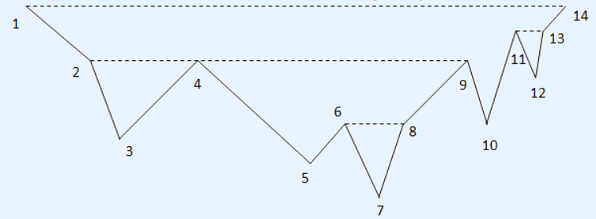

You own a park located on a mountain, which can be described as a sequence of n points (xi, yi) from left to right, where xi,yi>0, xi<xi+1, yi!=yi+1 (that means there will not be horizontal segments in the mountain skyline), illustrated below(the numbers are the corresponding x-coordinate):

You own a park located on a mountain, which can be described as a sequence of n points (xi, yi) from left to right, where xi,yi>0, xi<xi+1, yi!=yi+1 (that means there will not be horizontal segments in the mountain skyline), illustrated below(the numbers are the corresponding x-coordinate): Since the mountain is very sloppy, some aerial tramways across the park would be very helpful. In the figure above, people can go from p4 to p9 directly, by taking a tram. Otherwise he must follow a rather
zigzag path: p4-p5-p6-p7-p8-p9.
Your job is to design an aerial tramway system. There should be exactly m trams, each following a horizontal segment in the air, between two points pi and pj. "Horizontal" means yi=yj, “in the air" means all the points in between are strictly below, i.e. yk<yi for every i<k<j. For example, no tram can travel between p2 and p9, because p4 is not strictly below p2-p9. However, you can have two trams, one
from p2 to p4, and one p4 to p9. There is another important restriction: no point can be strictly below k or more tramways, because it’ll be dangerous. For example, if k=3, we cannot build these 3 tramways simultaneously: p1-p14, p4-p9, p6-p8, because p7 would be dangerous. You want to make this system as useful as possible, so you would like to maximize the total length of all tramways. For example, if m=3, k=3, the best design for the figure above is p1-p14, p2-p4 and p4-p9,the total length is 20. If m=3, k=2, you have to replace p1-p14 with p11-p13, the total length becomes 9.